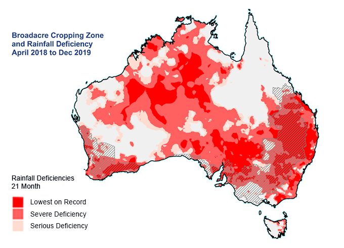

Deficit di Pioggia e Siccità
Prima e durante i bushfires del 2019-2020, l'Australia ha sperimentato un grave deficit di pioggia. La mancanza di precipitazioni ha seccato il terreno e la vegetazione, creando condizioni estremamente favorevoli allo sviluppo e alla propagazione degli incendi.
Questo fenomeno, combinato con temperature record, ha contribuito ad aumentare la vulnerabilità delle foreste e delle aree naturali, facilitando la rapida diffusione del fuoco.